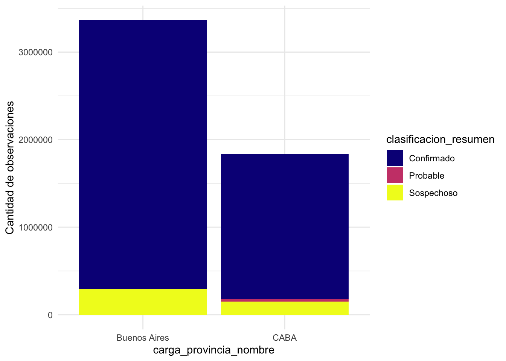
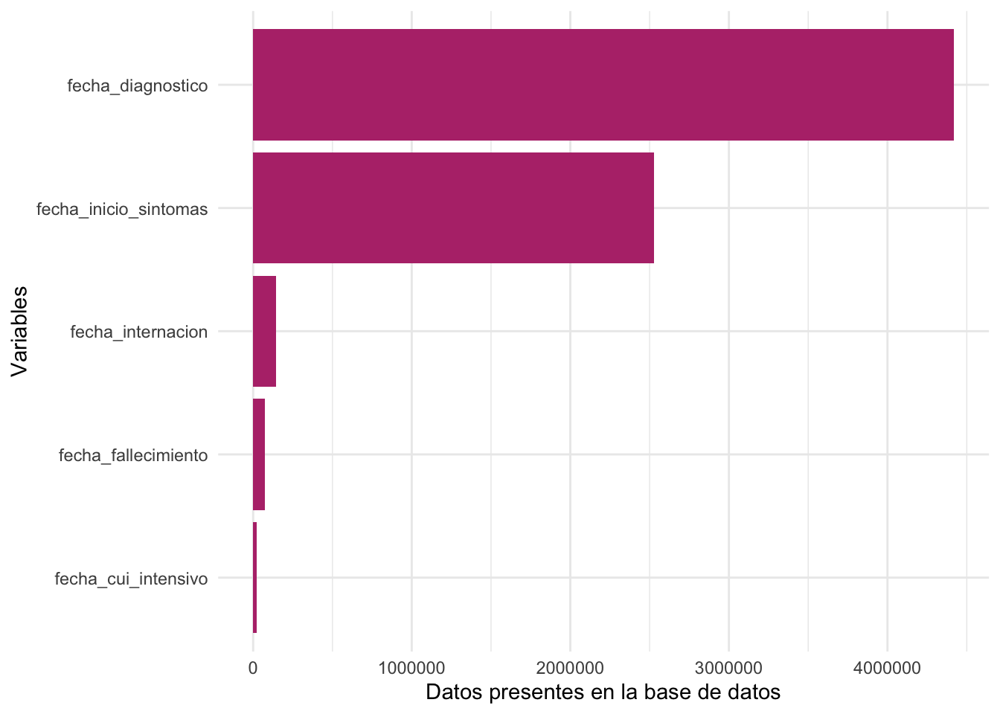

── Attaching core tidyverse packages ──────────────────────── tidyverse 2.0.0 ──
✔ dplyr 1.1.2 ✔ readr 2.1.4
✔ forcats 1.0.0 ✔ stringr 1.5.0
✔ ggplot2 3.4.3 ✔ tibble 3.2.1
✔ lubridate 1.9.2 ✔ tidyr 1.3.0
✔ purrr 1.0.1
── Conflicts ────────────────────────────────────────── tidyverse_conflicts() ──
✖ dplyr::filter() masks stats::filter()
✖ dplyr::lag() masks stats::lag()
ℹ Use the conflicted package (<http://conflicted.r-lib.org/>) to force all conflicts to become errors
Attaching package: 'arrow'
The following object is masked from 'package:lubridate':
duration
The following object is masked from 'package:utils':
timestamp
Attaching package: 'plotly'
The following object is masked from 'package:arrow':
schema
The following object is masked from 'package:ggplot2':
last_plot
The following object is masked from 'package:stats':
filter
The following object is masked from 'package:graphics':
layoutAnálisis de datos de COVID-19
Input inicial Base de datos csv pública de casos de COVID-19 en Argentina.
Objetivo Obtener una base de datos limplia y lista de usar en GeoCovid app: - Cada observación debe tener una fecha de contagio/enfermedad.
Carga de los datos y análisis inicial
# Leo el archivo como csv. Esta en Dropbox ya que es bastante grande.
covid_data <- arrow::open_dataset("/Users/florenciadandrea/Dropbox/data_geocovid/Covid19Casos.csv",
format = 'csv')
# Elijo que datos voy a descargar usando dplyr.
# Los datos no se bajan hasta que uso collect()
covid_casos_muestra <- covid_data |>
filter(clasificacion_resumen != 'Descartado',
carga_provincia_nombre %in% c('CABA', 'Buenos Aires') | residencia_provincia_nombre %in% c('CABA', 'Buenos Aires')) |>
select(id_evento_caso,
edad, edad_años_meses, sexo,
carga_provincia_nombre,
residencia_pais_nombre, residencia_provincia_nombre, residencia_departamento_nombre,
fecha_inicio_sintomas, fecha_diagnostico, fecha_internacion, fecha_cui_intensivo, fecha_fallecimiento,
clasificacion, clasificacion_resumen) |>
collect()
# Los guardo en formato parquet para reducir el tamaño
# write_parquet(covid_casos_muestra, "../data/covid_casos/covid_casos_baires.parquet")Composición del dataset:
covid_casos_muestra <- read_parquet("data/inicial/covid_casos_baires.parquet")
str(covid_casos_muestra)tibble [5,245,880 × 15] (S3: tbl_df/tbl/data.frame)
$ id_evento_caso : int [1:5245880] 10000049 10000055 10000057 1000006 10000066 10000076 10000079 10000084 10000087 10000093 ...
$ edad : int [1:5245880] 74 43 36 30 44 46 55 47 45 48 ...
$ edad_años_meses : chr [1:5245880] "Años" "Años" "Años" "Años" ...
$ sexo : chr [1:5245880] "F" "F" "M" "M" ...
$ carga_provincia_nombre : chr [1:5245880] "CABA" "CABA" "Buenos Aires" "Buenos Aires" ...
$ residencia_pais_nombre : chr [1:5245880] "Argentina" "Argentina" "Argentina" "Argentina" ...
$ residencia_provincia_nombre : chr [1:5245880] "CABA" "CABA" "Buenos Aires" "Buenos Aires" ...
$ residencia_departamento_nombre: chr [1:5245880] "COMUNA 09" "COMUNA 09" "Mercedes" "Malvinas Argentinas" ...
$ fecha_inicio_sintomas : Date[1:5245880], format: NA NA ...
$ fecha_diagnostico : Date[1:5245880], format: "2021-04-10" "2021-04-14" ...
$ fecha_internacion : Date[1:5245880], format: NA NA ...
$ fecha_cui_intensivo : Date[1:5245880], format: NA NA ...
$ fecha_fallecimiento : Date[1:5245880], format: NA NA ...
$ clasificacion : chr [1:5245880] "Caso confirmado por laboratorio - No activo (por tiempo de evolución)" "Caso confirmado por laboratorio - No activo (por tiempo de evolución)" "Caso confirmado por laboratorio - No activo (por tiempo de evolución)" "Caso sospechoso - No Activo - Con muestra sin resultado concluyente" ...
$ clasificacion_resumen : chr [1:5245880] "Confirmado" "Confirmado" "Confirmado" "Sospechoso" ...En total, el dataset presenta información para 5245861 casos diferentes. Las variables disponibles se encuentran descriptas en Tabla 1 de acuerdo a la información obtenida desde fuentes oficiales. De ellas fueron elegidas un porcentaje.
Esto va a aplicar a ambos subdatasets.
| Titulo de la columna | Tipo de dato | Descripción |
|---|---|---|
id_evento_caso |
Número entero (integer) | Numero de caso |
sexo |
Texto (string) | Sexo |
edad |
Número entero (integer) | Edad |
edad_años_meses |
Texto (string) | Edad indicada en meses o años |
residencia_pais_nombre |
Texto (string) | País de residencia |
residencia_provincia_nombre |
Texto (string) | Provincia de residencia |
residencia_departamento_nombre |
Texto (string) | Departamento de residencia |
carga_provincia_nombre |
Texto (string) | Provincia de establecimiento de carga |
fecha_inicio_sintomas |
Fecha ISO-8601 (date) | Fecha de inicio de síntomas |
fecha_apertura |
Fecha ISO-8601 (date) | Fecha de apertura del caso |
sepi_apertura |
Número entero (integer) | Semana Epidemiológica de fecha de apertura |
fecha_internacion |
Fecha ISO-8601 (date) | Fecha de internación |
cuidado_intensivo |
Fecha ISO-8601 (date) | Fecha de ingreso a cuidado intensivo en el caso de corresponder |
fallecido |
Texto (string) | Indicación de fallecido |
fecha_fallecimiento |
Fecha ISO-8601 (date) | Fecha de fallecimiento |
asistencia_respiratoria_mecanica |
Texto (string) | Indicación si requirió asistencia respiratoria mecánica |
carga_provincia_id |
Número entero (integer) | Código de Provincia de carga |
origen_financiamiento |
Texto (string) | Origen de financiamiento |
clasificacion |
Texto (string) | Clasificación manual del registro |
clasificacion_resumen |
Texto (string) | Clasificación del caso |
residencia_provincia_id |
Número entero (integer) | Código de Provincia de residencia |
fecha_diagnostico |
Tiempo ISO-8601 (time) | Fecha de diagnóstico |
residencia_departamento_id |
Número entero (integer) | Código de Departamento de residencia |
ultima_actualizacion |
Fecha ISO-8601 (date) | Última actualización |
Datos faltantes
fecha_apertura (variable descartada) es la unica variable que reporta una fecha para todas las observaciones. fecha_diagnostico y fecha_inicio_sintomas NO PRESENTAN datos para todas las observaciones.
summary(covid_casos_muestra) id_evento_caso edad edad_años_meses sexo
Min. : 733774 Min. : -84.00 Length:5245880 Length:5245880
1st Qu.: 8678407 1st Qu.: 27.00 Class :character Class :character
Median :16534314 Median : 38.00 Mode :character Mode :character
Mean :17505517 Mean : 39.63
3rd Qu.:27367564 3rd Qu.: 51.00
Max. :33222629 Max. :2023.00
NA's :1424
carga_provincia_nombre residencia_pais_nombre residencia_provincia_nombre
Length:5245880 Length:5245880 Length:5245880
Class :character Class :character Class :character
Mode :character Mode :character Mode :character
residencia_departamento_nombre fecha_inicio_sintomas fecha_diagnostico
Length:5245880 Min. :2020-01-01 Min. :1202-01-07
Class :character 1st Qu.:2020-12-05 1st Qu.:2021-03-20
Mode :character Median :2021-05-05 Median :2021-07-19
Mean :2021-05-13 Mean :2021-07-22
3rd Qu.:2021-12-28 3rd Qu.:2022-01-13
Max. :2022-06-04 Max. :2022-06-04
NA's :2720185 NA's :825927
fecha_internacion fecha_cui_intensivo fecha_fallecimiento
Min. :2020-01-01 Min. :2020-03-04 Min. :2020-03-07
1st Qu.:2020-08-08 1st Qu.:2020-08-31 1st Qu.:2020-09-30
Median :2020-12-28 Median :2021-02-15 Median :2021-04-06
Mean :2021-01-18 Mean :2021-02-05 Mean :2021-03-04
3rd Qu.:2021-05-24 3rd Qu.:2021-05-27 3rd Qu.:2021-06-10
Max. :2022-06-04 Max. :2022-06-04 Max. :2022-06-04
NA's :5103454 NA's :5221684 NA's :5169727
clasificacion clasificacion_resumen
Length:5245880 Length:5245880
Class :character Class :character
Mode :character Mode :character
Total de casos de cada clasificación para CABA y Buenos Aires
La provincia de Buenos Aires tiene un mayor número de casos reportados en total para el período estudiado.
covid_casos_muestra |>
filter(carga_provincia_nombre %in% c('CABA', 'Buenos Aires')) |> # este filtro tiene sentido porque considere los casos de residentes en caba y baires que fueron cargados en otras provincias tambien
select(-1) |>
count(carga_provincia_nombre, clasificacion_resumen) |>
ggplot() +
geom_col(aes(x = carga_provincia_nombre,
y = n,
fill = clasificacion_resumen)) +
scale_fill_viridis_d(option = "C") +
theme_minimal() +
ylab('Cantidad de observaciones') +
xlab('carga_provincia_nombre')
Distribución de NAs en las distintas fechas reportadas
Debido a que la información de movilidad ciudadana se encuentra reportada por día es importante poder obtener una fecha asociada a cada observación.
fecha_diagnosticoyfecha_inicio_sintomasson las variables con mayor número de observaciones y las más relevantes a nivel epidemiológico.fecha_cui_intensivopresenta menor cantidad de observaciones quefecha_fallecido. Esto podria ser por falta de datos o por muertes que se dieron sin llegar a internacion.
obs_fechas <- covid_casos_muestra |>
select(starts_with('fecha_')) |>
pivot_longer(1:5,
names_to = 'names',
values_to = 'values'
) |>
group_by(names) |>
summarize(n = sum(!is.na(values)))
ggplot(obs_fechas) +
geom_col(aes(x = fct_reorder(names, n),
y = n),
fill = viridis::magma(3)[2]) +
theme_minimal() +
coord_flip() +
xlab('Variables') +
ylab('Datos presentes en la base de datos')
Análisis de fecha_inicio_sintomas y fecha_diagnostico
case_both_na <- sum(is.na(covid_casos_muestra$fecha_inicio_sintomas) & is.na(covid_casos_muestra$fecha_diagnostico))
case_sintomas_na <- sum(is.na(covid_casos_muestra$fecha_inicio_sintomas) & !is.na(covid_casos_muestra$fecha_diagnostico))
case_diagnostico_na <- sum(!is.na(covid_casos_muestra$fecha_inicio_sintomas) & is.na(covid_casos_muestra$fecha_diagnostico))
case_both_filled <- sum(!is.na(covid_casos_muestra$fecha_inicio_sintomas) & !is.na(covid_casos_muestra$fecha_diagnostico))
# Create a table with the counts
table_data <- data.frame(casos = c("ambas_columnas_na", "fecha_inicio_sintomas_na",
"fecha_diagnostico_na","ambas_columnas_completas"),
obs = c(case_both_na, case_sintomas_na,
case_diagnostico_na, case_both_filled)
) |>
mutate(porcentaje = round((100*obs)/nrow(covid_casos_muestra), digit = 1))
# chequeo que la cantidad de valores reportados en la tabla
# equivale al total de observaciones
if(sum(table_data$obs) == nrow(covid_casos_muestra)){
kable(table_data)
}| casos | obs | porcentaje |
|---|---|---|
| ambas_columnas_na | 284549 | 5.4 |
| fecha_inicio_sintomas_na | 2435636 | 46.4 |
| fecha_diagnostico_na | 541378 | 10.3 |
| ambas_columnas_completas | 1984317 | 37.8 |
CASO 1: fecha de inicio de sintomas y fecha de diagnostico no reportadas
Esto es el 5.4 % del total de la base de datos.
La mayoría de estos casos son sospechosos, posibles falsos negativos.
covid_casos_muestra |>
filter(is.na(covid_casos_muestra$fecha_inicio_sintomas) & is.na(covid_casos_muestra$fecha_diagnostico)) |>
select(clasificacion, clasificacion_resumen) |>
group_by(clasificacion_resumen, clasificacion) |>
summarize(obs = n()) |>
arrange(desc(obs)) |>
head() |>
kable()`summarise()` has grouped output by 'clasificacion_resumen'. You can override
using the `.groups` argument.| clasificacion_resumen | clasificacion | obs |
|---|---|---|
| Sospechoso | Caso sospechoso - No Activo - Con muestra sin resultado concluyente | 106623 |
| Confirmado | Caso confirmado por criterio clínico-epidemiológico - No activo (por tiempo de evolución) | 77031 |
| Sospechoso | Caso sospechoso - No Activo - Sin muestra | 61349 |
| Probable | Caso probable por Autotest - No Activo (por tiempo de evolución) | 23485 |
| Probable | Caso probable por Autotest - Activo | 7336 |
| Sospechoso | Caso sospechoso - Activo Internado - Con muestra sin resultado concluyente | 2061 |
Clasificación de los casos donde fecha_inicio_sintomas y fecha_diagnostico fueron no reportadas
CASO 2: fecha de inicio de sintomas reportada y fecha de diagnostico ausente
Esto es el 46.4 % del total de la base de datos.
La mayoría de estas observaciones representan pacientes con casos confirmados por laboratorio.
covid_casos_muestra |>
filter(is.na(covid_casos_muestra$fecha_inicio_sintomas) & !is.na(covid_casos_muestra$fecha_diagnostico)) |>
select(clasificacion, clasificacion_resumen) |>
group_by(clasificacion_resumen, clasificacion) |>
summarize(obs = n()) |>
arrange(desc(obs)) |>
head() |>
kable()`summarise()` has grouped output by 'clasificacion_resumen'. You can override
using the `.groups` argument.| clasificacion_resumen | clasificacion | obs |
|---|---|---|
| Confirmado | Caso confirmado por laboratorio - No activo (por tiempo de evolución) | 2342696 |
| Confirmado | Caso confirmado por laboratorio - No Activo por criterio de laboratorio | 45219 |
| Confirmado | Caso confirmado por laboratorio - Activo | 27943 |
| Confirmado | Caso confirmado por criterio clínico-epidemiológico - No activo (por tiempo de evolución) | 8837 |
| Confirmado | Caso confirmado por laboratorio - Fallecido | 7814 |
| Sospechoso | Caso con resultado negativo-no conclusivo - Activo | 2097 |
Clasificación de los casos donde solo fecha_inicio_sintomas fue reportada.
CASO 3: fecha de inicio de sintomas ausente y fecha de diagnostico reportada
Esto es el % del total de la base de datos.
En este caso, en su mayoria son los casos que fueron confirmados por criterio clínico-epidemiologico.
covid_casos_muestra |>
filter(!is.na(covid_casos_muestra$fecha_inicio_sintomas) & is.na(covid_casos_muestra$fecha_diagnostico)) |>
select(clasificacion, clasificacion_resumen) |>
group_by(clasificacion_resumen, clasificacion) |>
summarize(obs = n()) |>
arrange(desc(obs)) |>
head() |>
kable()`summarise()` has grouped output by 'clasificacion_resumen'. You can override
using the `.groups` argument.| clasificacion_resumen | clasificacion | obs |
|---|---|---|
| Confirmado | Caso confirmado por criterio clínico-epidemiológico - No activo (por tiempo de evolución) | 268559 |
| Sospechoso | Caso sospechoso - No Activo - Sin muestra | 130728 |
| Sospechoso | Caso sospechoso - No Activo - Con muestra sin resultado concluyente | 109266 |
| Sospechoso | Caso sospechoso - Activo Internado - Sin muestra | 11534 |
| Sospechoso | Caso sospechoso - Activo Internado - Con muestra sin resultado concluyente | 10104 |
| Confirmado | Caso confirmado por criterio clínico - epidemiológico - Activo internado | 3803 |
Clasificación de los casos donde solo fecha_diagnostico fue reportada.
CASO 4: fecha de inicio de sintomas y fecha de diagnostico reportadas
Esto es el 37.8 % del total de la base de datos.
En este caso, en su mayoría son los casos que fueron confirmados por laboratorio.
covid_casos_muestra |>
filter(!is.na(covid_casos_muestra$fecha_inicio_sintomas) & !is.na(covid_casos_muestra$fecha_diagnostico)) |>
select(clasificacion, clasificacion_resumen) |>
group_by(clasificacion_resumen, clasificacion) |>
summarize(obs = n()) |>
arrange(desc(obs)) |>
head() |>
kable()`summarise()` has grouped output by 'clasificacion_resumen'. You can override
using the `.groups` argument.| clasificacion_resumen | clasificacion | obs |
|---|---|---|
| Confirmado | Caso confirmado por laboratorio - No activo (por tiempo de evolución) | 1825253 |
| Confirmado | Caso confirmado por laboratorio - Fallecido | 64442 |
| Confirmado | Caso confirmado por laboratorio - No Activo por criterio de laboratorio | 50849 |
| Confirmado | Caso confirmado por criterio clínico-epidemiológico - No activo (por tiempo de evolución) | 35131 |
| Confirmado | Caso confirmado por laboratorio - Activo | 4687 |
| Sospechoso | Caso con resultado negativo-no conclusivo - Activo | 1054 |
Clasificación de los casos donde fecha_inicio_sintomas y fecha_diagnostico fueron reportadas.
Diferencia de días entre fecha_inicio_sintomas y fecha_diagnostico
dif_dias_total_casos <- covid_casos_muestra |>
dplyr::filter(carga_provincia_nombre %in% c('CABA', 'Buenos Aires')) |>
mutate(dias_caso = as.numeric(difftime(fecha_diagnostico, # time1
fecha_inicio_sintomas, # time2
units="days"))) # logica: time1 - time2
dif_dias <- dif_dias_total_casos |>
dplyr::filter(!is.na(fecha_inicio_sintomas) & !is.na(fecha_diagnostico)) # CASO 4
dif_dias# A tibble: 1,973,695 × 16
id_evento_caso edad edad_años_meses sexo carga_provincia_nombre
<int> <int> <chr> <chr> <chr>
1 10000079 55 Años M Buenos Aires
2 10000084 47 Años M Buenos Aires
3 10000087 45 Años F Buenos Aires
4 10000093 48 Años M Buenos Aires
5 10000099 54 Años F Buenos Aires
6 1000012 48 Años M CABA
7 10000143 50 Años M Buenos Aires
8 1000015 31 Años F Buenos Aires
9 10000157 25 Años M Buenos Aires
10 10000187 32 Años M Buenos Aires
# ℹ 1,973,685 more rows
# ℹ 11 more variables: residencia_pais_nombre <chr>,
# residencia_provincia_nombre <chr>, residencia_departamento_nombre <chr>,
# fecha_inicio_sintomas <date>, fecha_diagnostico <date>,
# fecha_internacion <date>, fecha_cui_intensivo <date>,
# fecha_fallecimiento <date>, clasificacion <chr>,
# clasificacion_resumen <chr>, dias_caso <dbl>Los casos tienen un rango que va del positivo al negativo.
range(dif_dias$dias_caso)[1] -7304 828Si grafico, observo que la gran mayoria de los casos cae entre 0 a 10 dias.
ggplotly(
dif_dias |>
filter(dias_caso < 30, dias_caso > -7) |>
group_by(dias_caso, carga_provincia_nombre) |>
count() |>
ggplot(aes(x = dias_caso,
y = n,
fill = carga_provincia_nombre)) +
geom_col() +
scale_fill_viridis_d()+
theme_minimal() +
ylab('Cantidad de observaciones') +
xlab('Diferencia entre fecha_inicio_sintomas y fecha_diagnostico')
)Período entre fecha_inicio_sintomas y fecha_diagnostico reportado para Buenos Aires y CABA, en los casos donde ambos valores fueron reportados
Base de datos final
- Debido a que los datos de movilidad ciudadana solo son para el año 2020, se limita la base a ese periodo.
- Considerando los casos descriptos anteriormente se tomaran las decisiones resumidas Tabla 2 para la creación de una nueva variable
fecha_enfermo:
fecha_enfermo
| Caso | Descripcion | fecha_enfermo |
|---|---|---|
| 1 | fecha_inicio_sintomas y fecha_diagnostico no reportadas |
Remover casos |
| 2 | fecha_inicio_sintomas reportada y fecha_diagnostico ausente |
Se considera fecha_diagnostico |
| 3 | fecha_inicio_sintomas ausente y fecha_diagnostico reportada |
Se considera fecha_inicio_sintomas |
| 4 | fecha_inicio_sintomas y fecha_diagnostico reportadas |
Se conserva fecha_inicio_sintoma |
- Para el caso 4, se eliminaron tambien los casos donde la diferencia entre
fecha_inicio_sintomasyfecha_diagnosticoera mayor a 30 o menor a -7.
# periodo de analisis
covid_inicio <- ymd("2020-03-01")
covid_final <- ymd("2022-03-31")
periodo <- function(x) {
covid_inicio <= x & covid_final >= x
}
covid_casos_muestra <- covid_casos_muestra |>
filter(if_all(starts_with('fecha_'),
~ is.na(.x) | covid_inicio <= .x & covid_final >= .x))
base_covid_completa <- dif_dias_total_casos |>
# elimino casos donde la diferencia de dias entre
# fecha de sintomas y diagnostico es muy extrema
filter(dias_caso < 30,
dias_caso > -7) |>
mutate(fecha_enfermo = case_when(
# CASO 1
!is.na(fecha_inicio_sintomas) &
!is.na(fecha_diagnostico) ~ as.character(fecha_inicio_sintomas),
# CASO 2
is.na(fecha_inicio_sintomas) &
!is.na(fecha_diagnostico) ~ as.character(fecha_diagnostico),
# CASO 3
!is.na(fecha_inicio_sintomas) &
is.na(fecha_diagnostico) ~ as.character(fecha_inicio_sintomas),
# CASO 4
is.na(fecha_inicio_sintomas) &
is.na(fecha_diagnostico) ~ NA_character_)) |>
filter(fecha_enfermo <= as.Date('2020-12-31'),
fecha_enfermo >= as.Date('2020-03-01'))
base_covid_completa <- base_covid_completa |>
drop_na(fecha_enfermo) # remuevo el caso 1
head(base_covid_completa)# A tibble: 6 × 17
id_evento_caso edad edad_años_meses sexo carga_provincia_nombre
<int> <int> <chr> <chr> <chr>
1 1000012 48 Años M CABA
2 1000015 31 Años F Buenos Aires
3 1000024 63 Años M CABA
4 1000025 23 Años M Buenos Aires
5 1000037 77 Años F CABA
6 1000052 31 Años F Buenos Aires
# ℹ 12 more variables: residencia_pais_nombre <chr>,
# residencia_provincia_nombre <chr>, residencia_departamento_nombre <chr>,
# fecha_inicio_sintomas <date>, fecha_diagnostico <date>,
# fecha_internacion <date>, fecha_cui_intensivo <date>,
# fecha_fallecimiento <date>, clasificacion <chr>,
# clasificacion_resumen <chr>, dias_caso <dbl>, fecha_enfermo <chr># guardo la base
write_parquet(base_covid_completa, "data/procesada/covid_casos_baires_geocovid.parquet")